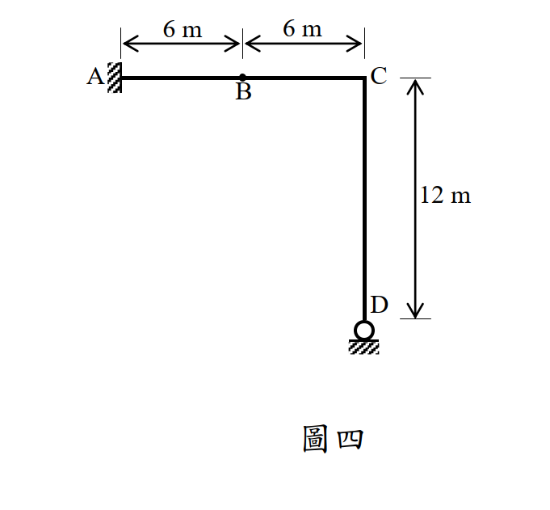
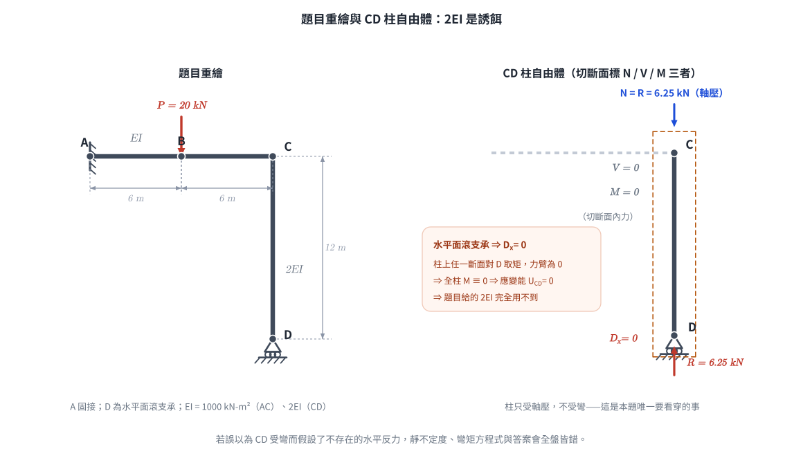
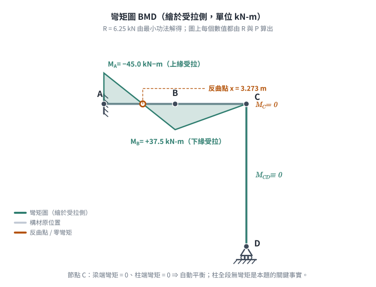
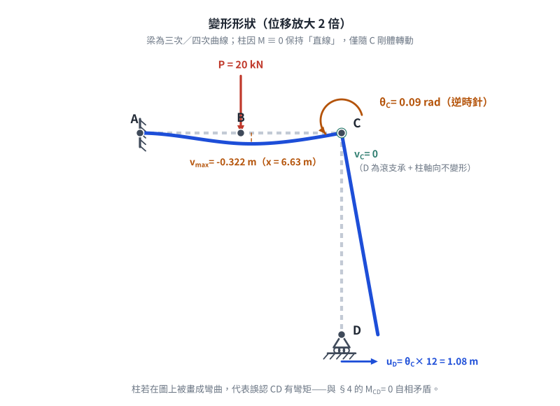

考題編號：SA-2014-4
主分類： SA-U2-1 靜不定結構之能量法
副分類： 無
分析法： 最小功法 (Method of Least Work) / 卡氏第二定理
標籤： 最小功法 卡氏第二定理 靜不定結構 多餘資訊陷阱 剛架
1. 原始題目重述 (Problem Restatement)
如圖四所示之剛架結構，其 A 點為固接支承，D 點為滾支承，構件 AC 與 CD 之彈性模數與慣性矩乘積分別為 $EI$ 及 $2EI$，且 $EI = 1000 \text{ kN-m}^2$。請以最小功法計算當 B 點承受一垂直向下載重 $20 \text{ kN}$ 時 C 點之轉角。（若以其他方法計算不予計分）（25 分）

圖說：A 點為左側固接支承。AC 為水平梁，長度 12m，B 點位於其中點（距 A、C 皆為 6m）。C 點連接垂直構件 CD，長度 12m。D 點為位於水平面上的滾支承。B 點承受向下 20 kN 載重。AC 剛度為 EI，CD 剛度為 2EI。

圖 2 題目重繪（左）與 CD 柱自由體（右）。右圖把切斷面的軸力／剪力／彎矩三者都標出來，即使 $V$ 與 $M$ 都是 $0$ 也照標。它攔下的是「看到 $2EI$ 就假設 CD 會彎」——$D_x = 0$ 使柱上任一斷面對 D 的力臂為零，全柱 $M \equiv 0$，$2EI$ 從頭到尾用不到。
2. 考題核心精神與出題者意圖 (Core Concepts & Examiner's Intent)
本題測驗考生對最小功法（Castigliano's 2nd Theorem 求解靜不定）的熟練度，並暗藏了一個極具鑑別度的觀念陷阱：
- 多餘反力選擇與最小功法：結構為一次靜不定，選擇 D 點的垂直反力作為多餘力 $R$，建立總應變能對 $R$ 的偏微分等於零（$\frac{\partial U}{\partial R} = 0$）的條件。
- 無效剛度陷阱（Trap）：題目特地給定 CD 桿的剛度為 $2EI$，這是極大的誘餌。因為 D 點是水平面上的滾支承，無法提供水平反力（$D_x = 0$），導致 CD 桿全段沒有任何彎矩（$M_{CD} = 0$）。因此 CD 桿不產生彎曲應變能，其剛度 $2EI$ 在本題計算中完全用不到！
- 卡氏定理求變位：求出多餘力後，需在 C 點施加虛擬彎矩 $M_0$，再利用 $\theta_C = \frac{\partial U}{\partial M_0}$ 求解轉角。
3. 解題戰略地圖與陷阱分析 (Strategic Roadmap & Trap Analysis)
解題策略：
- 靜不定度與基本系統：A 為固接 (3)，D 為水平面滾支承 (1)，共 4 個未知反力，為一次靜不定。取 D 點垂直反力 $D_y = R$（向上）為多餘力。
- 彎矩方程式建立：
- CD 桿：無水平外力與支承力，$M_{CD} = 0$。
- AC 桿：以 C 點為原點向左設座標 $x$。考慮 C 點施加逆時針虛擬彎矩 $M_0$（為求 $\theta_C$ 準備），寫出 $M_{AC}(x)$。 - 最小功法求反力：
- $\frac{\partial U}{\partial R} = \int \frac{M}{EI} \frac{\partial M}{\partial R} dx = 0$。將 $M_0 = 0$ 代入解出 $R$。 - 卡氏第二定理求轉角：
- $\theta_C = \frac{\partial U}{\partial M_0} = \int \frac{M}{EI} \frac{\partial M}{\partial M_0} dx$。代入已知的 $R$ 與 $M_0 = 0$ 積分即可得解。
陷阱分析：
- 誤判 CD 桿受力：若考生看到 $2EI$ 就認定 CD 桿一定會彎曲，進而假設了不存在的水平反力或錯誤的彎矩方程式，整題將全盤皆錯。必須堅定相信力學平衡：$D_x = 0 \Rightarrow M_{CD} = 0$。
- 符號與變形方向：虛擬彎矩 $M_0$ 的方向決定了算出來的轉角正負號代表的實際轉向。建議一開始先明確設定（例如逆時針），並畫出正確的內部彎矩正負號（下緣受拉為正）。
3.5 變數層次分析 (Variable Hierarchy Analysis)
複習提示：第一次解題後，在每個卡住的知識點旁標記
⚠；第二次複習時只看有⚠的項目。
最終目標
利用最小功法找出 D 點垂直反力，再以卡氏第二定理求出 C 點轉角。
本題關鍵公式（依計算順序）
$\boxed{\cdot}$ = 需由前步驟推導，非題目直接給定的變數
$$\text{Step 1: } M_{AC}(x) = \boxed{R}x + M_0 - P\langle x - 6 \rangle$$
$$\text{Step 2: } \frac{\partial U}{\partial R} = \int_0^{12} \frac{\boxed{M(x)}}{EI} \frac{\partial \boxed{M(x)}}{\partial R} dx = 0 \Rightarrow \text{解出 } R$$
$$\text{Step 3: } \theta_C = \frac{\partial U}{\partial M_0} = \int_0^{12} \frac{\boxed{M(x)}}{EI} \frac{\partial \boxed{M(x)}}{\partial M_0} dx$$
L1：題目直接給定
看到題目就能讀出的數字，不需要任何公式。
| 符號 | 數值 | 說明 |
|---|---|---|
| $P$ | 20 kN | B 點向下集中載重 |
| $EI$ | 1000 kN-m² | AC 桿彎曲剛度 |
| $L_{AB}, L_{BC}$ | 6 m | AC 桿各段長度 |
L2：需知識點推導
需要知道公式名稱與適用條件，套入 L1 即可算出。
彎矩方程式 (自 C 點向左 $x$)
令下緣受拉為正彎矩，虛擬彎矩 $M_0$ 設為逆時針。
| 區段 | $M(x)$ | $\partial M/\partial R$ | $\partial M/\partial M_0$ |
|---|---|---|---|
| C-B ($0 \le x < 6$) | $Rx + M_0$ | $x$ | $1$ |
| B-A ($6 \le x \le 12$) | $Rx + M_0 - 20(x-6)$ | $x$ | $1$ |
L3：深層知識（不懂就卡住）
| 知識點 | 說明 | 卡關? |
|---|---|---|
| 多餘資訊陷阱 | 滾支承在水平面 $\Rightarrow$ 水平反力 $D_x=0$ $\Rightarrow$ 垂直桿 CD 無彎矩 $\Rightarrow$ $2EI$ 不參與應變能計算。 | |
| 偏微分順序 | 計算 $\theta_C$ 時，因為 $R$ 是由最小功法（$\partial U/\partial R = 0$）求得，依據連鎖律 $\frac{dU}{dM_0} = \frac{\partial U}{\partial M_0} + \frac{\partial U}{\partial R}\frac{\partial R}{\partial M_0}$，後項為 0。因此可直接將算出的 $R$ 當作常數代入 $\frac{\partial U}{\partial M_0}$ 積分。 |
4. 步驟化詳細計算過程 (Step-by-Step Detailed Calculation)
Step 1：定義多餘力與建立彎矩方程式
令 D 點向上的垂直反力為 $R$。
在 C 點施加一逆時針方向之虛擬彎矩 $M_0$。
建立 AC 桿的彎矩方程式（以 C 點為原點，向左為 $x$ 軸正向，$0 \le x \le 12$）。
-
區間 C-B ($0 \le x < 6$)：
取 $x$ 處的切面，右側受力為向上的 $R$ 與逆時針的 $M_0$。
$M(x) = Rx + M_0$ -
區間 B-A ($6 \le x \le 12$)：
右側受力增加 B 點向下 $P = 20 \text{ kN}$。
$M(x) = Rx + M_0 - 20(x-6)$
註：因 D 點為滾支承，$D_x=0$，CD 桿的彎矩恆為 0，其應變能 $U_{CD} = 0$。
Step 2：利用最小功法求反力 $R$
最小功法：$\frac{\partial U}{\partial R} = 0$。此時真實結構中 $M_0 = 0$。
$$\frac{\partial U}{\partial R} = \int_0^{12} \frac{M}{EI} \frac{\partial M}{\partial R} dx = 0$$
將區段拆開並代入 $M_0 = 0$：
$$\frac{1}{EI} \left[ \int_0^6 (Rx) \cdot (x) dx + \int_6^{12} (Rx - 20(x-6)) \cdot (x) dx \right] = 0$$
$$R \int_0^{12} x^2 dx - 20 \int_6^{12} x(x-6) dx = 0$$
計算定積分：
$$\int_0^{12} x^2 dx = \left[ \frac{x^3}{3} \right]_0^{12} = \frac{1728}{3} = 576$$
$$\int_6^{12} (x^2 - 6x) dx = \left[ \frac{x^3}{3} - 3x^2 \right]_6^{12} = (576 - 432) - (72 - 108) = 144 - (-36) = 180$$
代回原式：
$$576 R - 20(180) = 0 \Rightarrow 576 R = 3600 \Rightarrow R = 6.25 \text{ kN (向上)}$$

圖 3 彎矩圖（繪於受拉側）。反曲點 $x = 3.273$ m 是由 $R$ 與 $P$ 解出的，不是目測畫上去的。它攔下兩件事：受拉側畫反（A 端應為上緣受拉、B 點為下緣受拉），以及在 CD 柱上畫出根本不存在的彎矩。
Step 3：利用卡氏第二定理求 C 點轉角
卡氏第二定理：$\theta_C = \frac{\partial U}{\partial M_0} \Big|_{M_0=0}$。
$$\theta_C = \int_0^{12} \frac{M}{EI} \frac{\partial M}{\partial M_0} dx$$
由 Step 1 可知 $\frac{\partial M}{\partial M_0} = 1$。將 $R = 6.25$ 代入：
$$\theta_C = \frac{1}{EI} \left[ \int_0^6 (6.25x) \cdot (1) dx + \int_6^{12} (6.25x - 20(x-6)) \cdot (1) dx \right]$$
合併積分區間：
$$\theta_C = \frac{1}{EI} \left[ \int_0^{12} 6.25x dx - \int_6^{12} 20(x-6) dx \right]$$
計算定積分：
$$\int_0^{12} x dx = \left[ \frac{x^2}{2} \right]_0^{12} = 72 \Rightarrow 6.25 \times 72 = 450$$
$$\int_6^{12} (x-6) dx = \left[ \frac{(x-6)^2}{2} \right]_6^{12} = \frac{36}{2} = 18 \Rightarrow 20 \times 18 = 360$$
代回得：
$$\theta_C = \frac{1}{EI} [450 - 360] = \frac{90}{EI}$$
Step 4：代入數值求最終解答
已知 $EI = 1000 \text{ kN-m}^2$。
$$\theta_C = \frac{90}{1000} = 0.09 \text{ rad}$$
因算出的 $\theta_C$ 為正值，代表實際轉向與設定的虛擬彎矩 $M_0$ 方向相同，即為逆時針方向。
$$\boxed{\text{C 點轉角為 } 0.09 \text{ rad (逆時針方向)}}$$

圖 4 變形形狀（位移放大 2 倍）。梁的撓度曲線由 $EIv'' = M$ 積分而得，圖上的 $v_C = 0$ 與 $\theta_C = 0.09$ rad 正是計算結果的兩個邊界條件。它攔下的是把柱畫成彎曲（等於自認 CD 有彎矩）、以及 $\theta_C$ 轉向畫反。
5. 關鍵爭議點與進階探討 (Critical Issues & Advanced Discussion)
- 彎矩面積法 / 共軛梁法驗證：若將 AC 視為一端固定 (A) 一端滾支承 (C) 的簡支懸臂梁，受載重 $P$ 作用。利用靜定基本公式疊加，載重 $P$ 造成的 C 點順時針轉角為 $\frac{PL^2}{8EI} = \frac{20 \times 144}{8 \times 1000} = 0.36 \text{ rad}$；向上反力 $R$ 造成的 C 點逆時針轉角為 $\frac{RL^2}{2EI} = \frac{6.25 \times 144}{2 \times 1000} = 0.45 \text{ rad}$。淨轉角為 $0.45 - 0.36 = 0.09 \text{ rad}$ (逆時針)。這證明了最小功法的計算完全正確。
- 如果 D 點是鉸支承 (Pin) 呢？ 若考題將 D 點改為鉸支承，則 $D_x$ 不為零，此時為二次靜不定，必須設定兩個多餘力（$D_x, D_y$），CD 桿的 $2EI$ 剛度就會進入應變能方程式中。這是備考時可以自行延伸練習的絕佳變體題。
圖解補繪：2026-08-28（向量圖，腳本 gen_SA-2014-4.py，可重跑）